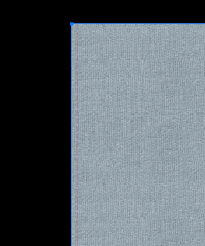

Assign Material
Assign Material is how you add a material to a shape or edge of a garment. Use the Shape or Edge API to assign, replace a fabric, seam, artwork, trim and so on.
For more information about the feature, please visit here.
Sample Plugin
Sample plugin for garment creation is available here
Assign fabric
Code Snippet
BwApi.ShapeMaterialIdSet(garmentId, shapeId, materialId)
BwApiShapeMaterialIdSet(garmentId, shapeId, materialId);
BwApiShapeMaterialIdSet(garmentId, shapeId, materialId);
Result

Assign seam
Code Snippet
BwApi.EdgeMaterialIdSet(garmentId, shapeId, edgeId, materialId)
BwApiEdgeMaterialIdSet(garmentId, shapeId, edgeId, materialId);
BwApiEdgeMaterialIdSet(garmentId, shapeId, edgeId, materialId);
Result
